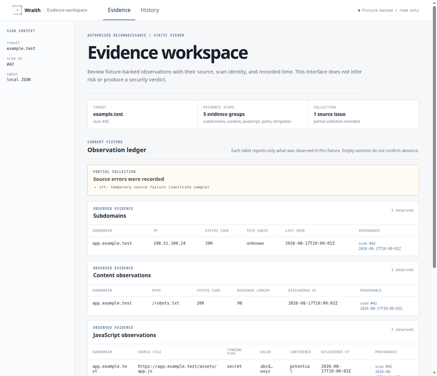

WraithEvidence workspace
Evidence, not hype.
A factual, fixture-backed workspace for authorized reconnaissance evidence—source state, observation time, and provenance in one calm view.

A factual, fixture-backed workspace for authorized reconnaissance evidence—source state, observation time, and provenance in one calm view.
